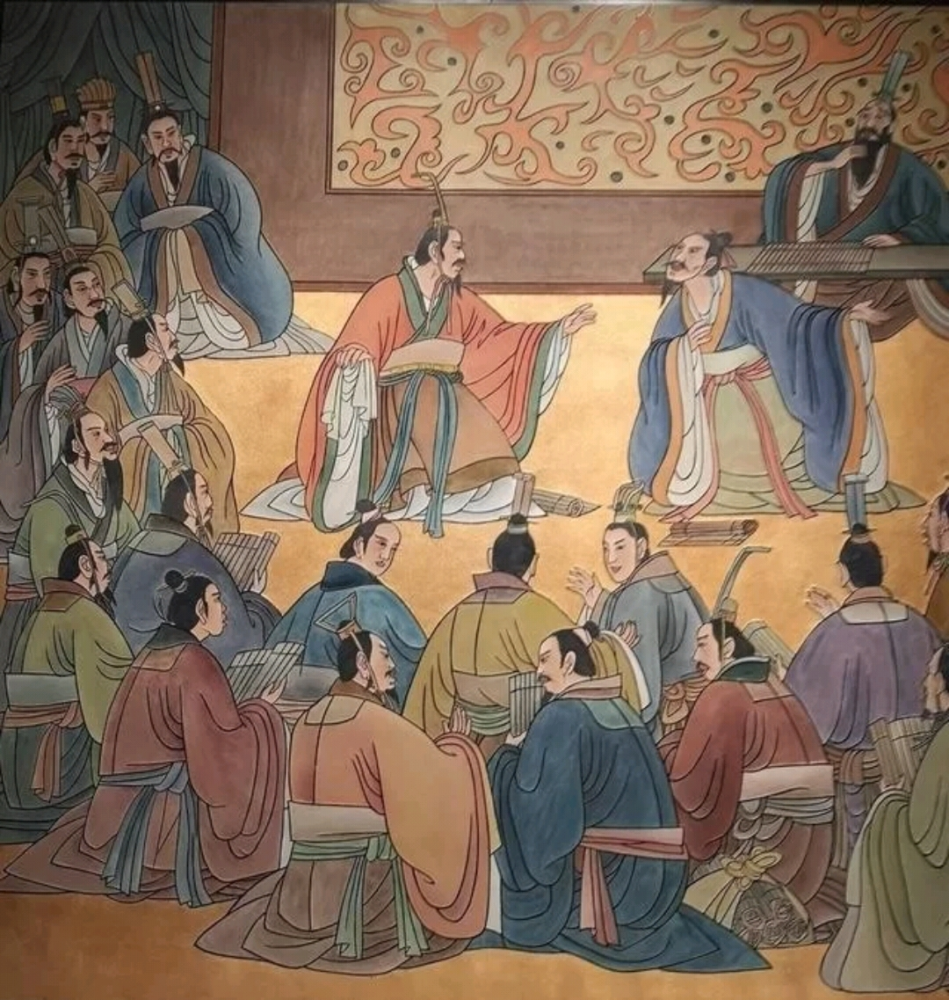
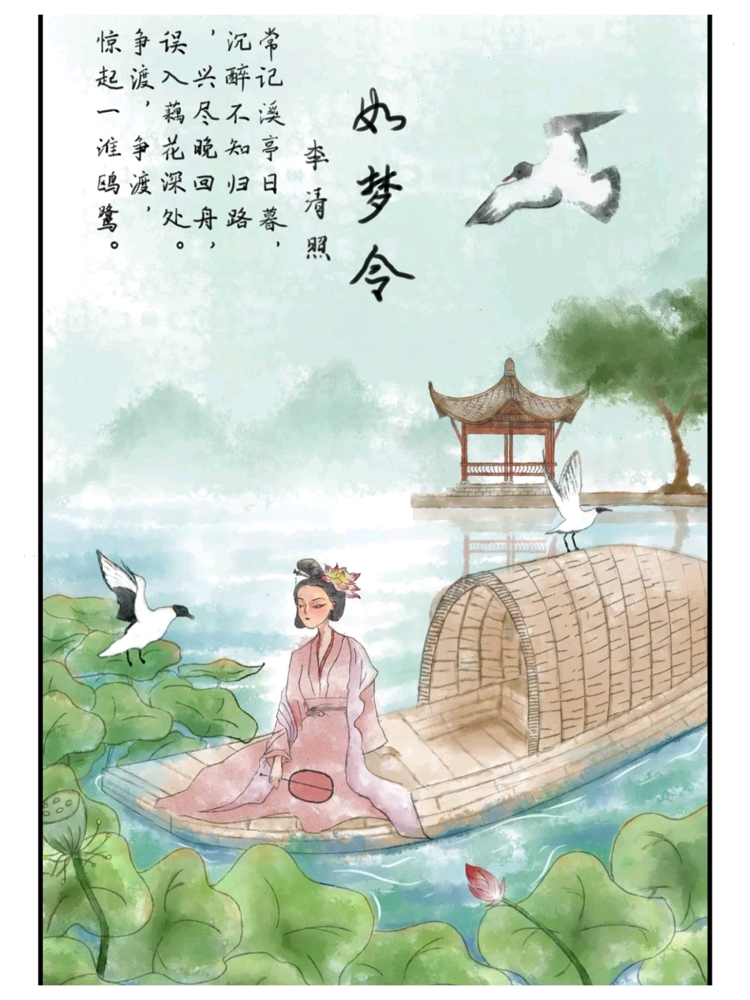
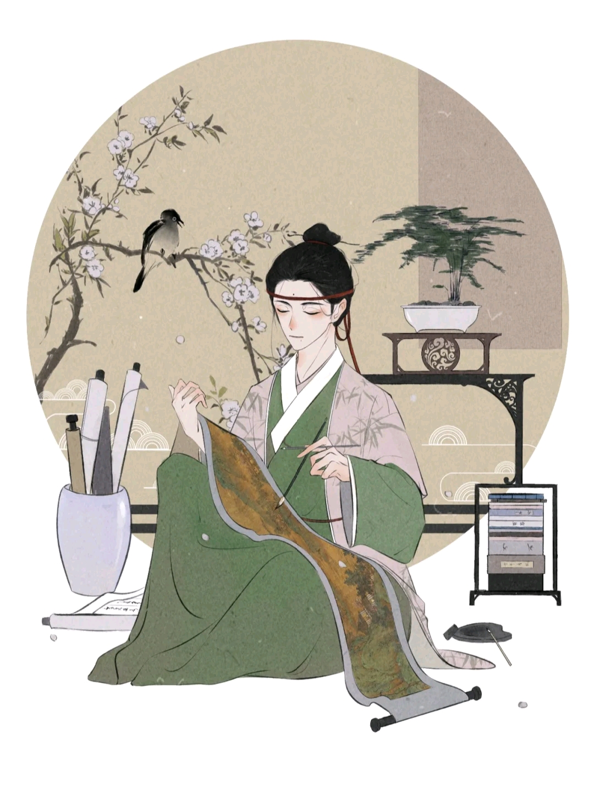

传统文学

名称：诸子百家
春秋战国时期
类别：学术派别
学派代表：12家
诸子百家
诸子指的是中国先秦时期管子、老子、孔子、庄子、墨子、孟子、荀子等学术思想的代表人物；
百家指的是儒家、道家、墨家、名家、法家等学术流派的代表家。
诸子百家是后世对先秦学术思想人物和派别的总称。
春秋后期已出现颇有社会影响的法家、道家、儒家、墨家、阴阳家等不同学派，
而至战国中期，许多学派纷呈，众多学说丰富多彩，
为中国文化发展奠定了宽广的基础，中国术语上把这一时期称为诸子百家或百家争鸣时期。
典型代表：儒家
代表人物：孔子、孟子、荀子。作品：《论语》、《孟子》、《荀子》
儒家是战国时期重要的学派之一，它以春秋时孔子为师，以六艺为法，崇尚“礼乐”和“仁义”，提倡“忠恕”和不偏不倚的“中庸”之道，主张“德治”和“仁政”，重视道德伦理教育和人的自身修养的一个学术派别。
儒家强调教育的功能，认为重教化、轻刑罚是国家安定、人民富裕幸福的必由之路。主张“有教无类”，对统治者和被统治者都应该进行教育，使全国上下都成为道德高尚的人。在政治上，还主张以礼治国，以德服人，呼吁恢复“周礼”，并认为“周礼”是实现理想政治的理想大道。至战国时，儒家分有八派，重要的有孟子和荀子两派。
孟子的思想主要是“民贵君轻”，提倡统治者实行“仁政”，在对人性的论述上，他认为人性本善，提出“性善论”，与荀子的“性恶论”截然不同，荀子之所以提出人性本恶，也是战国时期社会矛盾更加尖锐的表现。

诗词曲赋
类型：文学作品
诗词曲赋
诗，是为吟咏言志的文学题材与表现形式；
词又称曲子词、长短词、诗余，是配合燕乐乐曲而填写的歌诗；
曲是一种韵文形势，出现于南宋和金代，盛行于元代，是受民间歌曲的影响而形成的，句法较词更为灵活，多用口语，用韵也更接近口语；
赋是介于诗、文之间的边缘文体
《蝶恋花》
庭院深深深几许？杨柳堆烟，帘幕无重数。玉勒雕鞍游冶处，楼高不见章台路。
雨横风狂三月暮，门掩黄昏，无计留春住。泪眼问花花不语，乱红飞过秋千去。
赏析：
上阙一开端即描绘出思妇所外的典型环境，三个“深”字，极见庭院之深邃了。通过刻画描写，一位幽闭深闺女的贵族女子，因为薄幸之人一味追求狭邪之游的愁苦心 情便跃然纸上了。下阙，“三月暮”点出时令，“雨横风狂”，描述气候特征。此时此景只有掩起门户独守空房，发出“无计留春住”的悲叹。结句“泪眼问花花不 语，乱红飞过秋千去”，是历来受人赞赏的名句。

琴棋书画
又名：雅人四好
艺术性文物、技艺
琴棋书画
在古代，弹琴（多指弹奏古琴）、
弈棋（大多指中国象棋和围棋）、
书法、绘画是文人骚客（包括一些名门闺秀）修身所必须掌握的技能，
故合称琴棋书画，即“文人四友”。
解析
琴瑟：伏羲（公元前2400年 - 公元前2370年）发明琴瑟。琴瑟均由梧桐木制成，带有空腔，丝绳为弦。
琴初为五弦，后改为七弦；瑟二十五弦。由弦数可知瑟的体积比琴大。
围棋：尧舜（公元前2205年 - 公元前2110年）发明围棋。围棋古称“弈”，意即“你投一子，我投一子”。
而名称“围棋”的含义是“一种以包围和反包围战术决出胜负的棋戏”。
书：指书法，中华文明早期有甲骨文、金文（青铜器上的铭文），先秦时期主要是用刀刻在竹简上，有篆书、小楷等字体，
汉以后主要用毛笔书写，有隶书、魏碑、楷书、行书、草书、宋体等各类书写形式。
画：指中国画，一般用毛笔以水溶性颜料在宣纸上作画，以描绘山水、器物、花鸟、人物为主，色调单纯明快、画风写意抽象。
中国画又称国画，主要是用毛笔、软笔或手指，用国画颜色和墨在帛或宣纸上作画的一种中国传统的绘画形式。

.png)

.png)